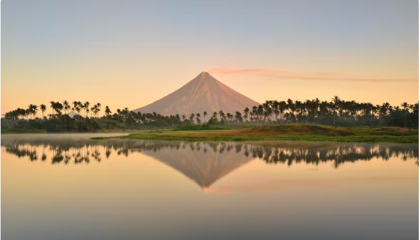
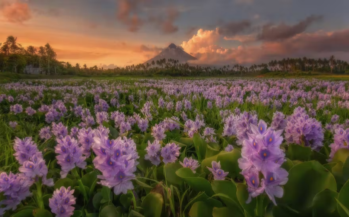

Sample Legazpi Itinerary: Mayon Volcano + Cagsawa Ruins + City Tour

To make the most out of your time
in Legazpi City, here is a suggested itinerary
for 3 days and 2 nights stay.
Day 1: Arrival + City Tour + Outdoor Activities
- 07:00 AM - ETA at Legazpi City
- 08:00 - 09:00 AM - Visit Peñaranda Park,
Legazpi City Hall and Cathedral of St. Gregory the Great
- 09:30 - 11:00 AM - Visit Albay Astrodome and Legazpi Boulevard
- 11:00 - 12:00 NN - Lunch at Legazpi Boulevard
- 01:00 PM - Hotel check-in
- 01:30 - 02:30 PM - Free time / relax
- 02:30 - 05:00 PM - Visit Embarcadero de Legazpi,
go-kart racing, try the zipline and check out the shops.
It’s a popular attraction included in a
Legazpi day tour
- 05:00 - 06:00 PM - Dinner at Embarcadero de Legazpi
Day 2: Nature Park + Wildlife Adventure + Historical Visit
- 07:00 AM - Wake up. Have breakfast
- 08:00 - 09:30 AM - Visit Sumlang Lake and ride a bamboo raft
- 10:00 - 12:00 NN - Check out the animals,
go boat riding or play at the playground at
the Albay Park and Wildlife
- 12:00 - 01:00 PM - Lunch
- 01:30 - 03:00 PM - Go back to the hotel and rest
- 03:00 - 05:00 PM - Visit the Japanese Tunnel,
try the adventure activities and watch the
- 03:00 - 05:00 PM - Visit the Japanese Tunnel,
try the adventure activities and watch the sunset at
Lignon Hill Nature Park in a
Legazpi sightseeing trip
- 05:00 - 06:00 PM - Return to the hotel and have dinner
Day 3: Sightseeing + Mayon ATV Tour
- 07:00 AM - Wake up. Have breakfast
- 08:30 - 11:30 AM - Visit Daraga Church and Cagsawa Ruins, two of the most popular tourist spots included in most Legazpi tours
- 12:00 NN - Lunch
- 01:00 - 4:00 PM - Visit the Mayon Volcano National Park and go on a Mayon ATV Tour
- 05:00 PM - Early dinner
- 06:00 PM - ETD Legazpi City to Manila
Practical Tips and Information
- Legazpi is a tobacco-free city.
The Smoke-Free Ordinance enforced
starting 2009 prohibits smoking in
all public places, including government
offices, public places, malls, and parks.
- Wear light clothes to keep you comfortable
but bring sunglasses, umbrellas, caps, scarves,
and sunscreen to protect yourself from the sun.
- Always check the weather prior to visiting the outdoor
destinations especially the Cagsawa
Ruins and Mayon Volcano
Legazpi City: More Than Mount Mayon

Mayon Volcano is clearly one of the
best things about Legazpi City. It is no
doubt a majestic sight and it’s no wonder
why a lot of the city’s attractions and
activities are centered around it. However,
a closer look will reveal that the
city is more than meets the eye.
Legazpi is a charming and bustling city
full of history, culture, and nature.
It is a place where one can learn and enjoy
at the same time. It definitely lives up to
its tagline - a City of Fun and Adventure.
Start planning your tour to Legazpi City!
Look into Legazpi tours and activities that you
can add to your itinerary.
Leave Your Comments Below: